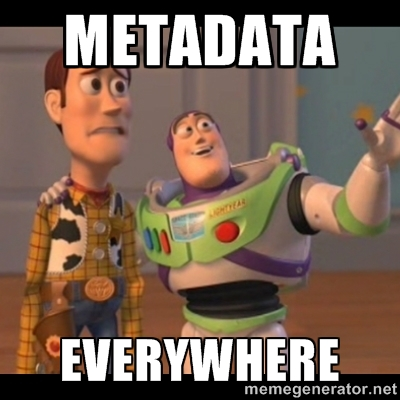
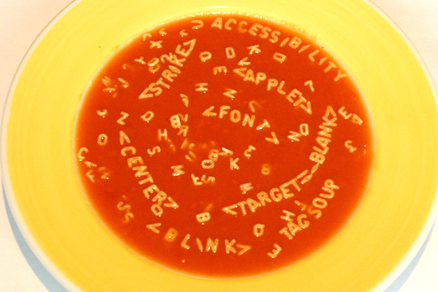

Prazer, HTML
Por Diego Ramos
AVISO
Essa palestra foi feita pensando numa abordagem prática .
O objetivo é mostrar assuntos de maneira introdutória e direcionar pontos para aprofundamento .
O que iremos ver ?
- O que é, o que come, onde vive ?
- Metadados
- Microdados
- Semântica e sua importância
- Algumas tags
O que é, o que come, onde vive ?

Camadas client-side
São compostas por três camadas:
- A informação, que é o HTML que vai exibi-la na página.
- CSS, que vai formatar esse HTML de forma que fique legível, usável, bonito.
- Definição de comportamento desses elementos, que é o Javascript e Ajax.
Deles o HTML é mais importante. É o HTML que cuida da exibição da formatação.É ele que serve os buscadores e leitores de tela.É ele que serve a informação para aplicações e te dão toda a informação que você busca na web todos os dias.
Metadados
Metadados
Os Metadados são um conjunto de informações a respeito da página e do conteúdo nela publicado.
Essas informações são usadas pelos navegadores e user-agents em geral, normalmente sendo invisíveis para os usuários.
Entendo a estrutura e semântica do HTML5
Microdados
Microdados
A especificação de Microdados do HTML define um mecanismo que permite que máquinas – leia-se meios de acesso como scripts, aparelhos, sistemas, serviços etc – reconheçam dados que possam ser embedados em documentos HTML de uma forma fácil.
Esses dados devem ser legíveis para seres humanos e para máquinas, sendo também compatíveis com outros formatos de dados existentes como RDF ou JSON.
Microdados
Os Microdados são atributos colocados nas tags do HTML com informações para complementar seu significado. O Google dá um exemplo muito interessante. Veja abaixo um texto sobre uma determinada pessoa:
Meu nome é Bob Smith, mas todos me chamam de Smithy. Esta é a minha página inicial:
www.example.com
Moro em Albuquerque, Novo México, e trabalho como engenheiro na ACME Corp.
Microdados
Agora esse mesmo código recheado de Microdados:
Meu nome é Bob Smith
mas todos me chamam de Smithy.
Esta é a minha página inicial:
www.example.com
Moro em Albuquerque, Novo México, e trabalho como engenheiro
na ACME Corp.

Semântica e sua importância
Em todas as páginas da Web existem divisões básicas referentes aos tipos de conteúdo que são colocados em cada parte do layout, como cabeçalho, rodapé ou menu de navegação.

Semântica e sua importância
Nas versões anteriores do HTML não haviam tags com uma semântica apropriada para cada uma dessas divisões.
Dessa forma, os desenvolvedores acabavam usando a tag
Semântica e sua importância
No HTML5 foram criadas diversas tags semânticas para indicar aos user-agents quais conteúdos estão sendo inseridos em cada uma das divisão da página, organizando e padronizando o desenvolvimento.

Cabeçalho com o elemento header

Entendo a estrutura e semântica do HTML5
Navegação Global com o elemento nav
O novo elemento nav do HTML5 serve para agrupar uma lista de links para outras partes do site, seja essa lista de navegação local ou global. Esses blocos de links podem estar em diferentes partes do layout, como no cabeçalho ou no rodapé.Diferentes sessões com o elemento section
O novo elemento section do HTML5 é o menos especifico entre as novas tags. A diferença do section para um div é que o primeiro serve para dividir o conteúdo em diferentes sessões, que podem conter elementos como header ou article, enquanto o segundo divide qualquer conteúdo, sem uma finalidade específica.
(...)
Tags
a
Define a âncora de um elemento.
Spotspan
Div e Span definem a estrutura dos elementos. Div é um elemento de bloco e Span um elemento de linha.
Texto
h1..h6
Grupo de títulos definidos por importância, onde o H1 é o mais importante e o H6 o menos importante.
Texto
ul,ol,li
Listas ordenadas (OL) e listas não ordenadas (UL) são utilizadas para definir e criar listas de itens.
p
Define um parágrafo.
Inputs
Essa tag, talvez é uma das mais importantes e que tem tido mais melhorias nas atualizações do HTML.
password
Utilizamos esse tipo para disponibilizar a inserção de dados que serão mascarados .
Utilizamos esse tipo para disponibilizar a inserção de um endereço de e-mail válido .
tel
Esse input foi criado para trabalhar com telefones, porém, como existem diversos padrões de telefones não há uma validação, apenas através do atributo pattern.
O uso dele é apenas para semântica.
url
Esse tipo valida URLs.
number
Esse tipo trabalha com strings que no envio serão transformados em números, o input também disponibilizará setas para incrementar e decrementar o valor do campo.
range
Esse tipo quanto ao valor retornado trabalha igualmente o Number mas visualmente é mostrado um slider.
search
Bom suporte, inclusive alguns browsers estilizando o mesmo ( lupa dentro do input ) e também tem uma boa semântica.
color
Ótimo suporte, implementa um colorpicker, o valor da cor retornado é em hexadecimal.
Obrigado!